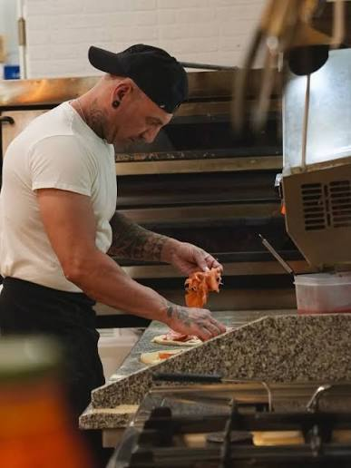
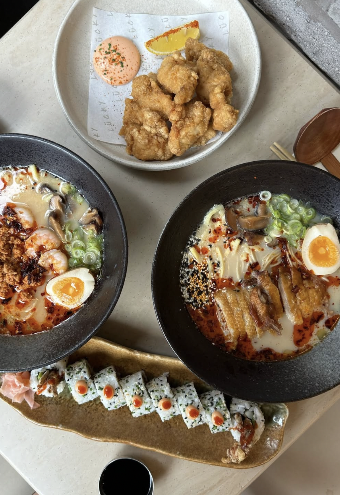
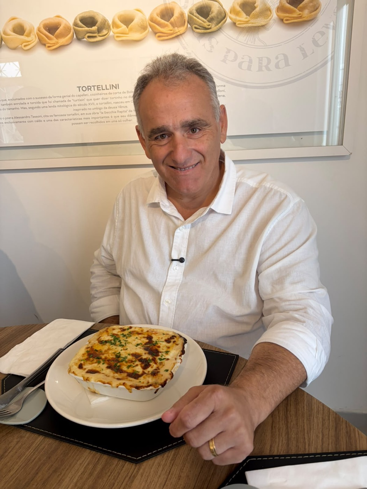
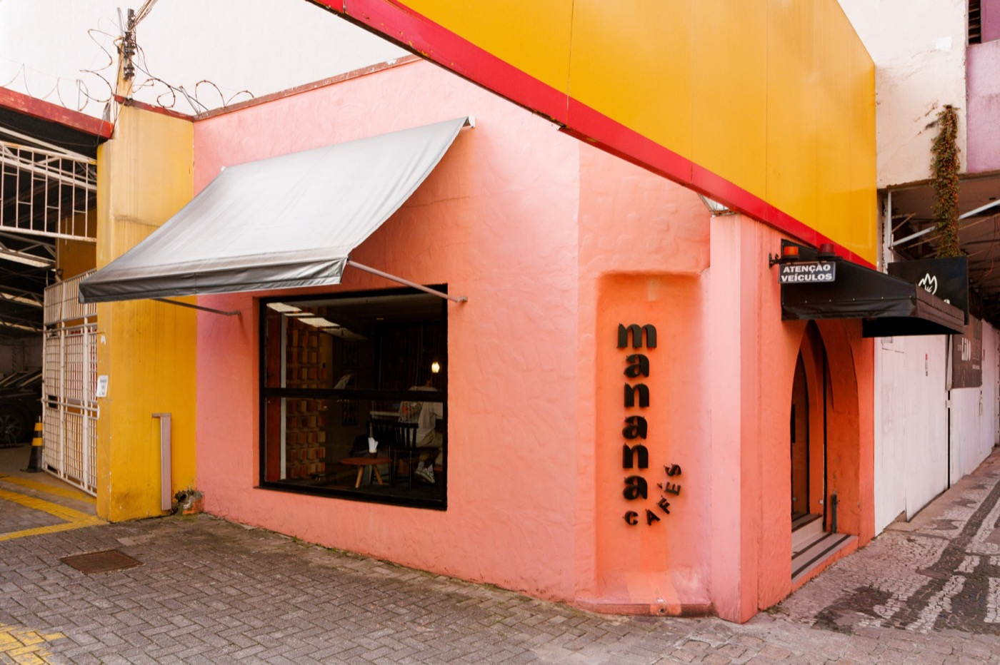
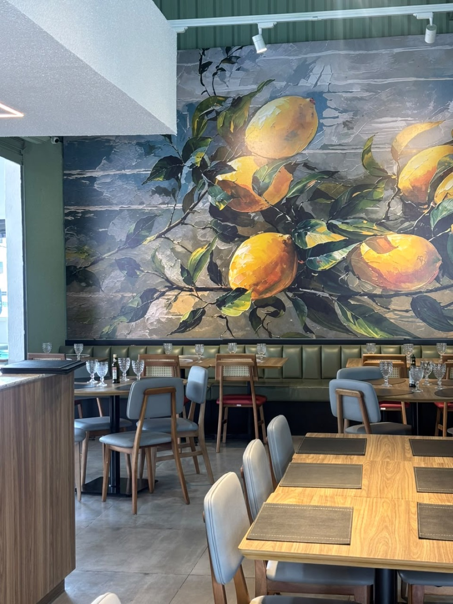

Foto: Pedro Mamoré.
Influenciador no restaurante: Quando a parceria ajuda e quando atrapalha
Por: Paula Melech
Para transformar visibilidade em uma boa experiência, a parceria precisa combinar com o público e caber na rotina da casa.
O prato chega, mas a primeira garfada pode esperar. Antes dela, vêm o enquadramento, o vídeo e a publicação. Do outro lado da tela, alguém descobre o restaurante, e pode decidir fazer uma visita.
Para a casa, a cena abre uma oportunidade de divulgação. No salão, porém, o atendimento continua. Luzes, equipamentos e circulação precisam conviver com a experiência de quem só quer aproveitar a refeição.
Divulgação × desconforto

Foto: Divulgação.

Foto: Divulgação.

Foto: Divulgação.

Foto: Divulgação.
Na Espanha, o Guachinche Casa Aguere, em Tenerife, anunciou publicamente veto a influenciadores. Já o Pastifizzio, em Valladolid, recusou refeições em troca de avaliações, mas admitiu campanhas publicitárias acordadas, segundo reportagem do El País de agosto de 2026.
A reação tem precedentes.
Nos Estados Unidos, o café Dae, no Brooklyn, restringiu sessões de fotos e vídeos em 2023, preservando registros rápidos na própria mesa.
Em Manchester, o Lucky Ramen and Sushi tornou pública uma negociação que gerou conflito em 2024. Após ter seu pedido de refeição em troca de divulgação publicado pelo restaurante, um influenciador reclamou da exposição e defendeu que a comida gratuita compensaria seu trabalho de promoção. A casa também divulgou essa reação, sem identificar a pessoa, e a discussão atraiu centenas de comentários.
Os casos mostram que vetar pessoas, limitar gravações e recusar permutas são decisões diferentes. A tendência também chegou ao Brasil. Antes de aceitar uma parceria ou anunciar uma proibição, a pergunta é: que tipo de relação faz sentido para o seu negócio?

“A produção de conteúdo faz parte da visita, mas queremos que eles também possam sentar, conversar e curtir a experiência”
proprietário do Luponero
Parcerias pagas: não
Fuga Café
No Fuga Café, também em Curitiba, Victor Pandolfi, sócio-fundador, prefere outro caminho. A casa não mantém parcerias pagas com influenciadores e recebe criadores apenas como clientes comuns.
A decisão passa por uma experiência anterior de divulgação que, segundo ele, atraiu um público pouco alinhado à proposta do café. Victor relata reclamações sobre detalhes do atendimento, como a equipe não oferecer açúcar. Na percepção dele, quem chega espontaneamente costuma conhecer melhor o perfil da casa.
sócio-fundador do Fuga Café
A divulgação nas redes acontece de forma espontânea, a partir de visitas sem parceria com a casa. “Se tem algum influenciador, pode ter certeza que é algo orgânico”, afirma Victor. Ou seja, criadores frequentam o café como clientes comuns e compartilham suas próprias impressões sobre a experiência.
Antes dos seguidores, olhe a afinidade
Toque nos cartões para virar
A afinidade é um bom ponto de partida. Ela não garante retorno, mas ajuda a orientar a escolha.

Parcerias: com cautela
Manana Café
No Manana Café, em Curitiba, as parcerias com influenciadores ajudam a apresentar a marca a quem ainda não a conhece. A repercussão no ambiente online, porém, nem sempre se transforma em vendas pelo site.
Segundo a proprietária, Dora Suh, os resultados variam conforme o influenciador. “Às vezes é bacana, mas muitas vezes gera somente seguidores, mas não vendas”, afirma.
A diferença entre ampliar a audiência e gerar compras pesa na forma como a casa trabalha com esses criadores. “Como já tivemos experiências boas e outras ruins, a gente não trabalha tanto com influenciadores”, explica Dora.

“Às vezes é bacana, mas muitas vezes gera somente seguidores, mas não vendas”
proprietária do Manana Café
A visita precisa caber na rotina da casa

Uma gravação pode acontecer com um celular sobre a mesa. Também pode envolver iluminação, microfone, repetição de cenas e circulação pelo salão.
Por isso, alinhe a produção antes da visita. Horários, equipamentos e espaços disponíveis ajudam a evitar que a equipe precise negociar tudo durante o atendimento.
No Luponero, os convites não incluem roteiro nem orientações específicas de filmagem. Os influenciadores podem levar a família e são estimulados a conhecer a comida, o atendimento e o ambiente com naturalidade.
É o formato escolhido pela casa. Outros estabelecimentos podem precisar de limites diferentes, conforme o espaço, o movimento e a proposta do serviço.
Antes do convite, alinhe estes cinco pontos
Combinados claros deixam a equipe e o convidado preparados para a visita.
O que pode × o que não pode
Receber um influenciador como cliente é diferente de contratar uma produção de conteúdo. Essa distinção orienta os cuidados com a visita, explica o advogado Eros Belin de Moura Cordeiro, especialista em Direito do Consumidor.
Pode
A casa pode não aceitar uma proposta comercial. Isso não impede o criador de frequentar o local como consumidor.
Alinhar horário, equipamentos e espaços para preservar o atendimento e a circulação.
A visita ao salão não dá livre acesso à cozinha ou a outros espaços restritos.
Registrar os combinados da parceria, inclusive os limites para o uso negociado de espaços e da imagem do estabelecimento.
Não pode
A recusa injustificada de atendimento a quem se dispõe a pagar contraria o Código de Defesa do Consumidor, que proíbe recusar a venda a quem se dispõe a pagar (artigo 39).
O aval do restaurante não substitui os cuidados com a imagem de clientes e funcionários.
Segundo a Súmula 403 do STJ, esse uso pode gerar indenização independentemente de prova do prejuízo.
Atenção: depende da situação
Uma foto do próprio prato, uma produção publicitária e uma gravação que bloqueia a passagem têm impactos diferentes. As regras precisam considerar o contexto e respeitar os direitos do consumidor. Um registro pessoal não deve ser automaticamente tratado como uma parceria comercial.
Para Cordeiro, explicar as condições com antecedência e formalizar a parceria ajuda a estabelecer esses limites. Quando a visita envolve parceria comercial, o restaurante pode definir por contrato onde e como a gravação acontece.
“Neste caso, evidentemente, o empresário pode delimitar e o ideal é que faça através de um instrumento contratual”
advogado especialista em Direito do Consumidor
Quem avalia é o cliente
Mesmo com regras para a visita, o cliente continua livre para avaliar o que consumiu. O próprio especialista ressalta que estabelecer limites para a exploração de espaços e imagens não elimina a possibilidade de uma avaliação do serviço nas redes sociais.
Uma parceria também precisa preservar a transparência com quem acompanha o conteúdo. O Guia de Publicidade por Influenciadores Digitais, do Conselho Nacional de Autorregulamentação Publicitária (Conar), orienta que todo conteúdo feito em parceria comercial seja identificado como publicidade, com termos como #publi ou #publicidade ou com as ferramentas das próprias redes, como o selo de parceria paga. A identificação precisa aparecer logo na primeira visualização da postagem, sem que o seguidor precise abrir a legenda inteira.
No Luponero, Ugo resume os critérios que considera essenciais:
“Acredito que uma boa parceria precisa de afinidade, liberdade e transparência.”
proprietário do Luponero
Para ele, cada parte contribui de uma forma: o restaurante recebe bem, o criador compartilha seu olhar e o público encontra informações e impressões para decidir se quer conhecer a casa. A parceria é positiva quando amplia a visibilidade do negócio, combina com o trabalho do influenciador e apresenta uma nova opção a quem acompanha o conteúdo.
Encontre os pontos de atenção
Toque nos pontos da ilustração ou na lista
A gravação bloqueia a passagem? Reorganize a produção para preservar o atendimento.
O equipamento incomoda quem está no salão? Reveja posição, intensidade e horário.
Clientes ou funcionários aparecem? Planeje o enquadramento e os cuidados com a imagem de cada pessoa.
Os alertas também aparecem fora da gravação: consumo e entregas mal definidos ou expectativas que a casa não consegue atender.
A parceria valeu a pena?
Curtidas e visualizações ajudam a acompanhar o alcance. Para o restaurante, também interessa observar se houve procura, reservas, consumo e retorno de clientes.
Algumas formas simples de medir:
-
Cupom exclusivo
Cada influenciador divulga um código próprio, e o caixa registra quantas vezes ele foi usado.
-
Pergunta no atendimento
Perguntar como o cliente conheceu a casa, na reserva ou no caixa, e anotar as respostas durante o período da ação.
-
Link próprio
Um link de reserva ou de pedido só para aquela parceria mostra quantas pessoas chegaram por ela.
-
Comparação de períodos
Comparar reservas e vendas da semana da ação com semanas parecidas sem ação.
Uma publicação isolada, porém, não explica sozinha as mudanças no movimento.
Antes de a câmera ligar
O prato chega, e a primeira garfada continua podendo esperar. A diferença está no que foi combinado antes: o horário fora do pico, o canto do salão reservado para a gravação, a luz que não invade a mesa ao lado, o cupom que vai mostrar se a visita trouxe clientes. O Luponero organiza visitas, o Manana observa que ganhar seguidores nem sempre significa vender e o Fuga Café recebe criadores como clientes comuns. Nas três casas, a decisão parte da mesma pergunta: a experiência que aparece no vídeo é a que o cliente vai encontrar quando chegar.